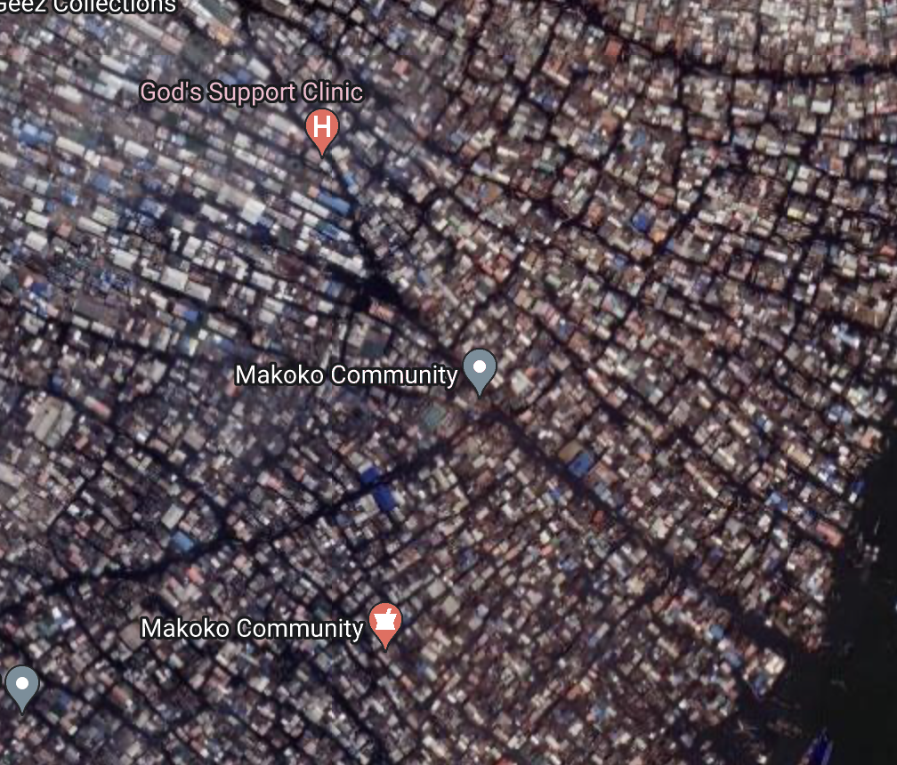

Challenges and Resistance
If Makoko wasn't a slum of hope, many people would just be living for the next day, but residents of
Makoko are trying to escape their current life. The government of Nigeria would prefer that Makoko
didn't exist as they think it could be a push factor due to the slum hurting the image of their country. They have shown their carelessness for the wellbeing of the people
of Makoko. They have even gone so far that they have attempted to hide the squatter settlement on satellite imagery entirely.
The challenges of living in makoko is that their sanitation is a hazard for all those who inhabit the slum. Mosquitoes will drink the filthy water and therefore
infect people with malaria. Diseases due to the poor and overworked healthcare system they have, most people wont reccover.
In fact, an official population census of Makoko hasn't been conducted yet. An estimated 12,500
homes have been built in Makoko, although each one houses 6-10 people.

Back